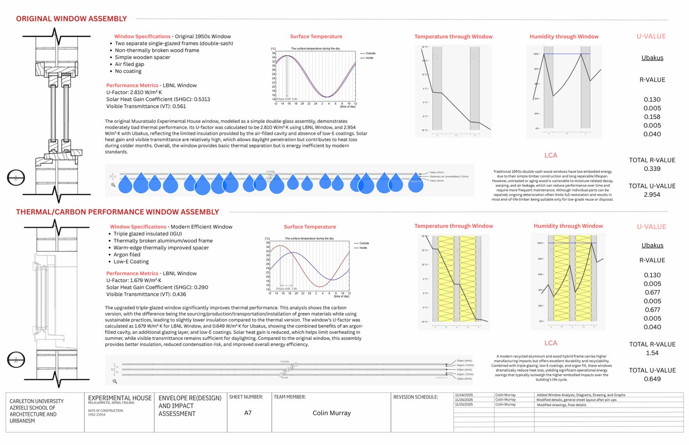
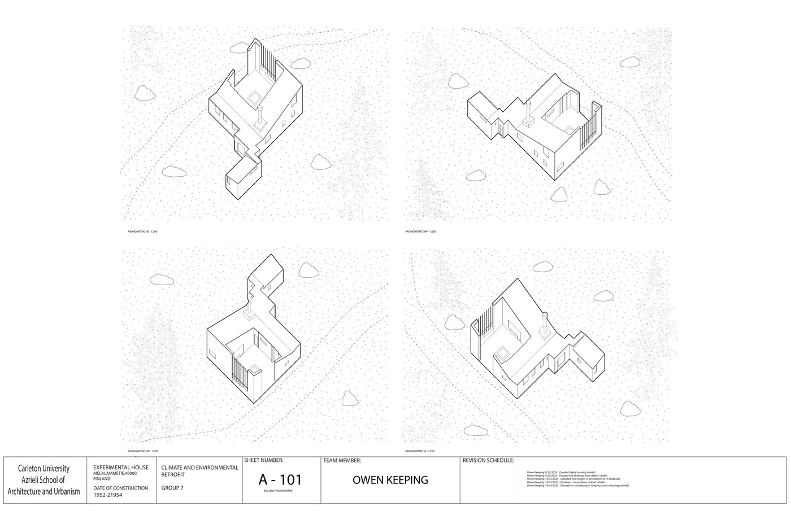
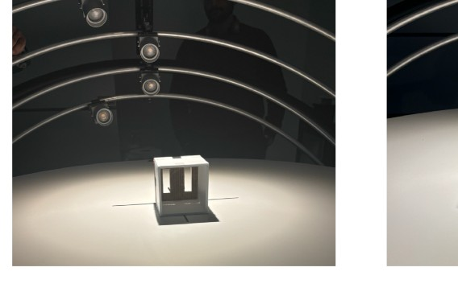
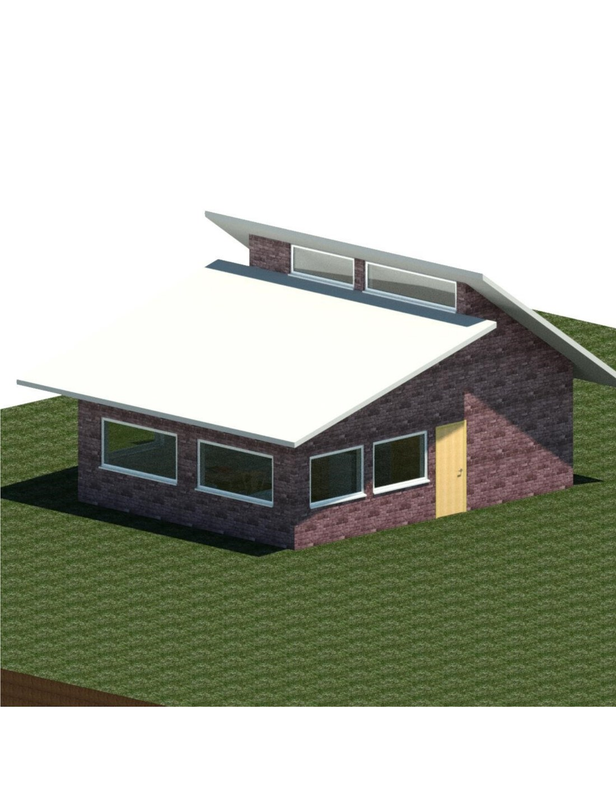
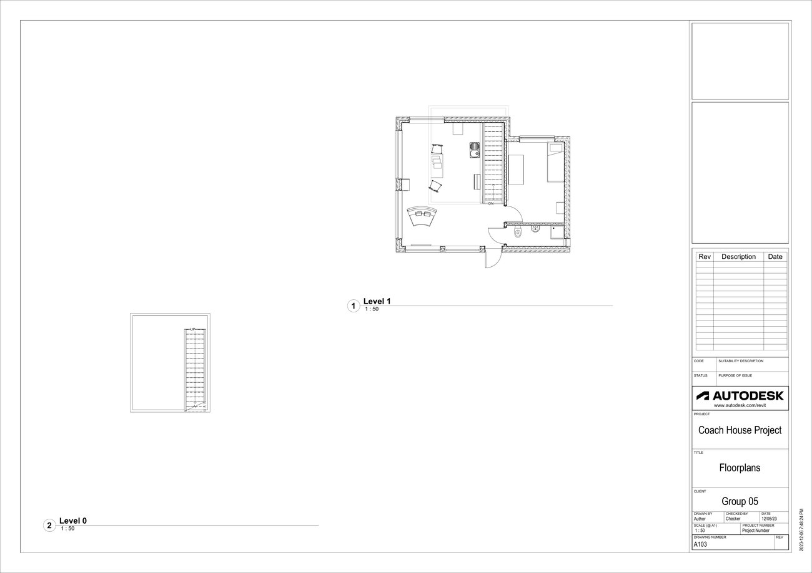
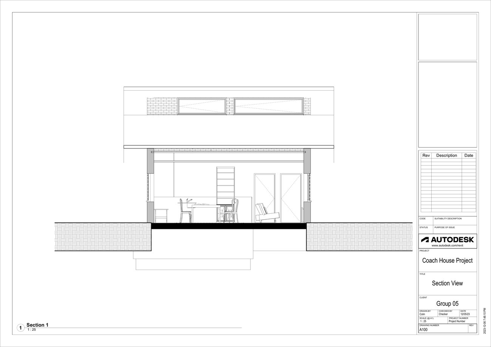
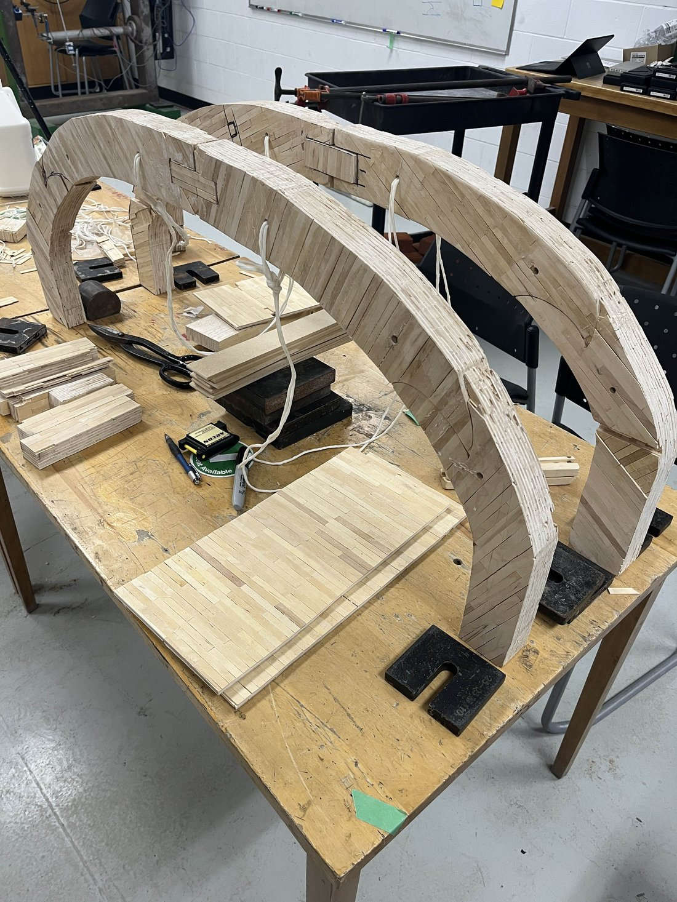
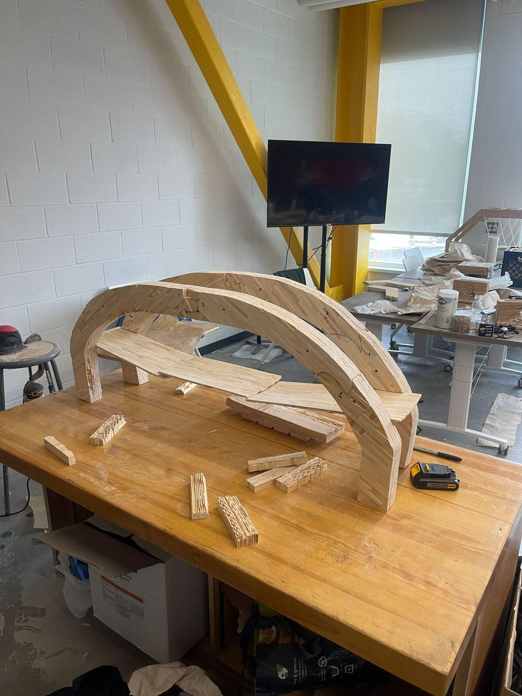
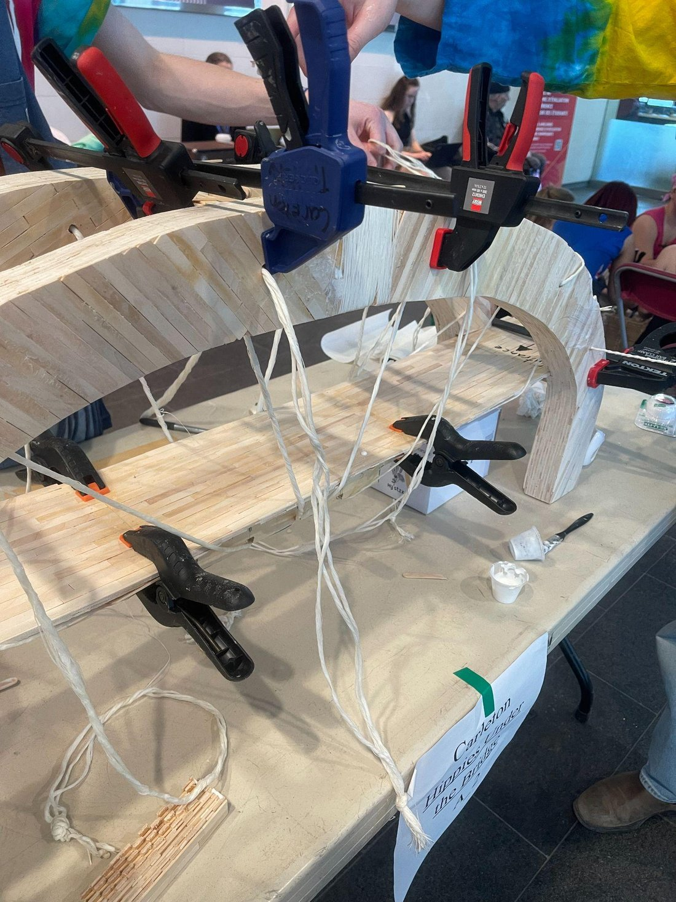

4th-year Architectural Conservation and Sustainability Engineering student at Carleton University, focused on building performance simulation, envelope design, and structural analysis.
Applying engineering's modeling and uncertainty-analysis instincts to player evaluation, draft analysis, and in-game preparation research — mostly MLB, with NBA and NHL work as well.
Final-year coursework spanning structural mechanics, fluid systems, building performance simulation, and architectural conservation — with a recurring focus on quantifying uncertainty and energy performance.
I'm Colin Murray, a 4th-year Architectural Conservation and Sustainability Engineering student at Carleton University (Co-op option, graduating April 2027). My coursework runs through building science, structural design, conservation philosophy, and computational modeling — calibrating EnergyPlus models against real consumption data, running uncertainty analysis on fluid flow instrumentation, and designing climate-responsive façades from first principles.
I work across the full stack of a building project: hand calculations for thermal bridging and psychrometrics, 3D modeling in Revit, Inventor, and Fusion 360, weather and envelope performance analysis with Climate Consultant and the LBNL toolset (THERM, WINDOW), and the codes and standards (ASHRAE, NBC) that constrain all of it.
Available for full-time, part-time, or co-op work starting May 2026 (4 or 16 months). Fluent in English, working proficiency in French.
Studio work, simulation models, and structural builds — from envelope retrofits to a 505 kg-rated popsicle-stick bridge.


Alvar Aalto, Muuratsalo, Finland (1953) — Group of 6, Carleton University
A group forensic study of Aalto's Experimental House envelope, mapping the original wall, roof, window, and floor assemblies and redesigning each for thermal performance and embodied carbon, with UA-value compliance checked against the 2020 IECC residential code and a full LCA. My sheets covered the window assembly and the timber/brick material sourcing research: I modeled the original 1950s double-sash window (U-factor 2.81 W/m²K) against a redesigned triple-glazed, low-E, argon-filled assembly, then researched and documented the timber sourcing and milling chain for the materials geography sheet.

Group 15 — Ottawa climate-responsive home façade
Designed a south-facing residential façade combining advanced envelope insulation, triple-glazed low-E argon windows, and an overhang/side-fin shading system tuned to Ottawa's solar geometry. Physical 1:30 scale model validated against a heliodon, confirming full shading 9am–3pm from May–July and full solar penetration in December. PV array sized using PVWatts and linear interpolation to exceed the 500 kWh/year generation target.
Python + EnergyPlus model — the Canal Building, Ottawa
Built a full EnergyPlus/Python upgrade-pathway model evaluating lighting, envelope, plug-load, PV, and heat pump retrofits both independently and combined, quantifying interaction effects between upgrades (sum-of-parts vs. whole-building, 2.05% discrepancy). Modeled GHG emissions under Federal vs. hourly "Max" grid-intensity scenarios, evaluated carbon tax payback at $0/$80/$170 per tonne, and demonstrated a fully net-zero EUI pathway combining a 70% lighting reduction with 50% roof-coverage PV.
OpenStudio / EnergyPlus — calibration against measured building data
Calibrated an OpenStudio model against measured natural gas and electricity consumption through three rounds of iteration on solar/thermal absorptance, internal gains, and infiltration, then checked the result against ASHRAE Guideline 14 thresholds for CV(RMSE) and nMBE. The natural gas calibration cleared the 15% CV(RMSE) threshold; electricity came in far over, which traced back to the ideal-loads HVAC simplification removing equipment cycling losses and overstating summer cooling. Phase II tested LED lighting, plug-load scheduling, and wall insulation upgrades both separately and combined, cutting electricity use from 129 GJ/yr to 77.3 GJ/yr with natural gas held close to baseline.



Drawn by Colin Murray — plans, sections, wall details
Complete architectural documentation set for a small residential coach house, produced in Revit: massing render, two-level floor plans, building section showing interior layout, and a 1:10 wall detail section specifying the brick veneer / air gap / blockwork / insulation assembly. A full exercise in construction documentation standards — title blocks, scales, revision schedules, and section callouts.



Carleton University — Team: Colin, Lucas, Eithin, Shauna, Gabe
Designed and hand-built a popsicle-stick tied-arch bridge using Nielsen-type hanger geometry to minimize deflection and vertical force. Each arch was laminated from roughly 20 layers of sticks, cut and sanded to a drawn boundary, with braided dental-floss cables acting as the tension hangers. Iterated the arch connection detail mid-build for both bandsaw manufacturability and aesthetics, and added a third deck support after identifying deflection instability as a likely point of failure.
Original analysis, updated as each project moves from data pull to write-up.
Tests whether Toronto's offense performs significantly better against starters they've faced multiple times in a season versus first-time or late call-up starters, using Statcast PA-level outcomes (xwOBA, wRC+) rather than surface ERA splits. Motivated by the Jays' 2025 run — strong against scouted, regularly-seen aces, apparently vulnerable to unfamiliar call-ups.
A model that takes publicly available pre-draft Statcast and scouting metrics (exit velocity, barrel %, spin rate, FV grades) and outputs a value-over-slot score for an upcoming draft class, benchmarked against historical outcomes.
A tiered big board for the 2026 NBA draft class, ranked on scalability and projected playoff/analytical value rather than raw counting stats — built from per-36 advanced numbers (BPM, true shooting, usage). Full board with player breakdowns below.
A written piece on how new hitting coach David Popkins helped move Toronto's offense from 23rd to 4th in runs scored with largely the same roster — and what that says about preparation-driven performance versus personnel.
Ranked by how well a player's production translates to a winning lineup, not just by raw counting stats. Tiers and per-36 advanced numbers below.
This board leans on per-36 advanced stats — box plus-minus (BPM), true shooting percentage (TS%), and usage rate (USG) — rather than raw per-game scoring, since usage rate explains most of the gap in counting stats between prospects. The question driving the tiers: does a player's value hold up in a reduced or complementary role on a good team, which is closer to what playoff basketball demands than a high-usage role on a bad one.
Boozer's BPM of 18.7 is the second-highest ever recorded for an 18-year-old prospect, behind only Zion Williamson and ahead of Anthony Davis. What separates him from a usual stat-stuffer is that it comes at a real, shared usage rate (29.9%) rather than an inflated one — productive on both ends (12.7 OBPM, 6.0 DBPM) without needing the offense funneled through him to be effective. That's the profile that survives a playoff role change.
Carries the highest usage rate in the projected top four (33.5%) as a high-volume shot creator, with a BPM of 14.1 that holds up despite the workload. Efficiency (57.8 TS%) trails the rest of the tier slightly at that usage level — the swing question is whether that climbs once he's playing next to better shooters and creators than he saw in college, which is usually how usage-heavy guards' efficiency moves at the next level.
Led the nation at 25.5 points per game with a usage rate (33.9%) even higher than Peterson's, and his size at the wing is what makes the offensive load scalable — a 6'10" shot creator translates to more playoff matchups than a guard with the same skill set. BPM of 11.7 is solid but the lowest of the tier, driven almost entirely by the offensive number; the defensive activity needs to catch up for the two-way profile to match the rest of this group.
The best two-way balance in the tier outside Boozer — a 5.3 DBPM and 1.4 blocks per 36 at his size means the defensive value travels even in games where his offensive role shrinks, which is exactly the kind of skill set that survives a playoff rotation crunch. TS% of 62.6 is strong; the offensive feature package (creating his own shot off the dribble) is the least developed of the four, which is the gap between him and the top three.
The defensive playmaking is what stands out — a 6.0 DBPM is elite for a guard, on par with Boozer's defensive number. A point guard with that level of defensive impact profiles as more playoff-scalable than the raw scoring line (TS% 56.3) suggests on its own, since that kind of two-way guard play is specifically what good teams are short on in May.
Operates at a lower usage (25.2%) than anyone in the top tier but stays efficient (TS% 59.6) doing it — the profile of a player who doesn't need touches to be useful, which is the easiest kind of prospect to plug into a finished roster without changing how the team already plays.
A high-usage lead guard (29.5% USG, 6.4 assists per 36) with solid scoring efficiency, but the lowest defensive impact (0.7 DBPM) of anyone on this board. That's the specific thing that tends to get exposed in a playoff series once an opponent has a scouting report and a game plan — worth tracking whether the defensive activity improves as a counterpoint to the playmaking.
Stats current as of the latest update to Tankathon's 2026 big board. Per-36 numbers and advanced stats (BPM/OBPM/DBPM, TS%, USG) sourced from team and conference play-by-play data; rankings and tiering are my own.
Technical lab reports, conservation case studies, and an ethics essay — sourcing follows IEEE citation style. Click a title to expand its references.
Case study on K-Studio's conversion of an abandoned 1920s currant winery on Greece's Kourouta beach into a minimalist seaside hotel — looking at age-value, the Venice Charter's distinguishability standard, and the tension between commercial viability and historic preservation.
References [1] "Dexamenes," K-Studio, k-studio.gr/project/dexamenes/.Compares how two fortified hilltop sites, built for nearly identical defensive purposes a century apart, were absorbed into the cities that grew around them — one kept largely intact as a national historic site, the other woven directly into a UNESCO-listed Old Town.
References [1] "Halifax Citadel National Historic Site of Canada," Parks Canada — Directory of Federal Heritage Designations, canada.ca.Midterm essay walking through virtue, rights-based, duty-based, and consequence-based ethical frameworks, then applying each to the same engineering scenario to show where they agree and where they diverge.
References [1] C. Jamieson, "Ethics 101," ECOR 4995A Professional Practice Lecture 9, Carleton University, Ottawa, ON, 2025.Propagates instrument and reading uncertainty through a flow-rate measurement setup, comparing the combined uncertainty against the spread actually observed across repeated trials.
References [1] Carleton University, Department of Mechanical & Aerospace Engineering, "MAAE 2300 Laboratory Manual," 2024.Bench test of a small Honda gasoline engine at fixed throttle across a range of loads, comparing measured brake power, fuel consumption, and thermal efficiency against the ideal Otto cycle.
References [1] M. J. Moran and H. N. Shapiro, Fundamentals of Engineering Thermodynamics, 6th ed. Wiley, 2007.Long-form analysis, posted here as each piece is finished.